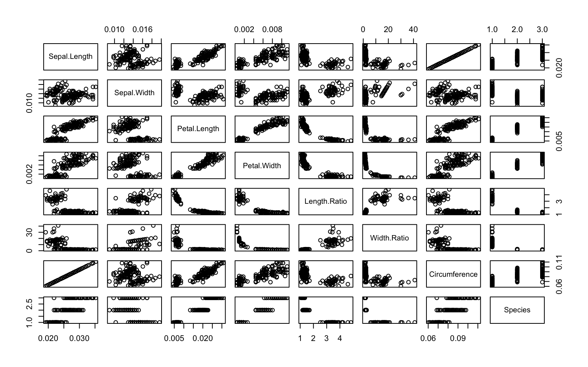

Version 4: Customize
Setup
Packages
# use install.packages FIRST TIME ONLY
update.packages(
params$package_location,
repos=NULL,
type="source"
)
library(irisproject)
library(dplyr)
library(ggplot2)
library(plotly)Parameters
for (p in names(params)) {
print(paste0(p, ': ', params[[p]]))
}## [1] "package_location: ./irisproject/"
## [1] "convert_cm: TRUE"
## [1] "plot_pairs_of: Sepal.Length, Sepal.Width, Petal.Length, Petal.Width, Length.Ratio, Width.Ratio, Circumference, Species"Starting Data
head(iris) %>%
knitr::kable(digits = 3)| Sepal.Length | Sepal.Width | Petal.Length | Petal.Width | Species | Length.Ratio | Width.Ratio | Circumference |
|---|---|---|---|---|---|---|---|
| 0 | 0 | 0 | 0 | setosa | 3.643 | 17.50 | 0 |
| 0 | 0 | 0 | 0 | setosa | 3.500 | 15.00 | 0 |
| 0 | 0 | 0 | 0 | setosa | 3.615 | 16.00 | 0 |
| 0 | 0 | 0 | 0 | setosa | 3.067 | 15.50 | 0 |
| 0 | 0 | 0 | 0 | setosa | 3.571 | 18.00 | 0 |
| 0 | 0 | 0 | 0 | setosa | 3.176 | 9.75 | 0 |
Data Manipulation
Convert Measurements
Converting data in first four columns from centemeters to inches
if (params$convert_cm) {
iris <- iris %>%
convert_measurements(1:4)
}Ratio features
Computing two ratio features: ratio of lengths (sepal : petal) and ratio of widths (sepal : petal)
iris <- iris %>%
compute_ratios()Circumference
Creating a new feature: circumference of the smallest circle that could circumscribe the flower (using the larger length as the radius).
iris <- iris %>%
compute_circumference()Final Data
head(iris) %>%
knitr::kable(digits = 3)| Sepal.Length | Sepal.Width | Petal.Length | Petal.Width | Species | Length.Ratio | Width.Ratio | Circumference |
|---|---|---|---|---|---|---|---|
| 0 | 0 | 0 | 0 | setosa | 3.643 | 17.50 | 0 |
| 0 | 0 | 0 | 0 | setosa | 3.500 | 15.00 | 0 |
| 0 | 0 | 0 | 0 | setosa | 3.615 | 16.00 | 0 |
| 0 | 0 | 0 | 0 | setosa | 3.067 | 15.50 | 0 |
| 0 | 0 | 0 | 0 | setosa | 3.571 | 18.00 | 0 |
| 0 | 0 | 0 | 0 | setosa | 3.176 | 9.75 | 0 |
Plots
Pairs plot of select variables
plot_pairs_of <- strsplit(params$plot_pairs_of, ",")[[1]] %>% trimws()Variables included:
- Sepal.Length
- Sepal.Width
- Petal.Length
- Petal.Width
- Length.Ratio
- Width.Ratio
- Circumference
- Species
pairs(iris[,plot_pairs_of])
Plot of circumference and length ratio by species
p <- iris %>% ggplot(aes(
x = Circumference,
y = Length.Ratio,
color = Species,
text = paste0(
"Species: ", Species,
"\nCircumference: ", round(Circumference,3),
"\nLength Ratio: ", round(Length.Ratio, 3),
"\nWidth Ratio: ", round(Width.Ratio, 3),
"\nPetal Width, Length: ", round(Petal.Width, 3),
", ", round(Petal.Length, 3),
"\nSepal Width, Length: ", round(Sepal.Width, 3),
", ", round(Sepal.Length, 3)
)
)) +
geom_point() +
theme_classic() +
theme(
legend.position = 'top',
legend.justification = 'left'
)
plotly::ggplotly(p, tooltip = c("text")) %>%
plotly::layout(
legend = list(
orientation = "h",
x = 0,
yanchor = "bottom",
y = 1.02
)
)